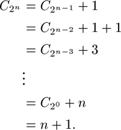

C++ Programming Robert Sedgewick - Princeton University Addison Wesley Professional Algorithms in C++, Parts 1–4: Fundamentals, Data Structure, Sorting, Searching, Third Edition C++ Programming Robert Sedgewick - Princeton University Addison Wesley Professional Algorithms in C++, Parts 1–4: Fundamentals, Data Structure, Sorting, Searching, Third Edition
2.5. Basic Recurrences
As we shall see throughout the book, a great many algorithms are based on the principle of recursively decomposing a large problem into one or more smaller ones, using solutions to the subproblems to solve the original problem. We discuss this topic in detail in Chapter 5, primarily from a practical point of view, concentrating on implementations and applications. We also consider an example in detail in Section 2.6. In this section, we look at basic methods for analyzing such algorithms and derive solutions to a few standard formulas that arise in the analysis of many of the algorithms that we will be studying. Understanding the mathematical properties of the formulas in this section will give us insight into the performance properties of algorithms throughout the book.
Recursive decomposition in an algorithm is directly reflected in its analysis. For example, the running time of such algorithms is determined by the size and number of the subproblems and the time required for the decomposition. Mathematically, the dependence of the running time of an algorithm for an input of size N on its running time for smaller inputs is captured easily with formulas called recurrence relations. Such formulas describe precisely the performance of the corresponding algorithms: To derive the running time, we solve the recurrences. More rigorous arguments related to specific algorithms will come up when we get to the algorithms—here, we concentrate on the formulas themselves.
Formula 2.1. This recurrence arises for a recursive program that loops through the input to eliminate one item|
CN is about N2/2. To solve such a recurrence, we telescopeit by applying it to itself, as follows:
Continuing in this way, we eventually find that
Evaluating the sum 1 + 2 + ...+ (N – 2) + (N – 1) + N is elementary: The given result follows when we add the sum to itself, but in reverse order, term by term. This result—twice the value sought—consists of N terms, each of which sums to N + 1.
|
Formula 2.2. This recurrence arises for a recursive program that halves the input in one step|
CN is about lg N. As written, this equation is meaningless unless N is even or we assume that N/2 is an integer division. For the moment, we assume that N = 2n, so the recurrence is always well-defined. (Note that n = lg N.) But then the recurrence telescopes even more easily than our first recurrence:

The precise solution for general N depends on the interpretation of N/2. In the case that N/2 represents N/2, we have a simple solution: CN is the number of bits in the binary representation of N, and that number is  lg N lg N + 1, by definition. This conclusion follows immediately from the fact that the operation of eliminating the rightmost bit of the binary representation of any integer N > 0 converts it into N/2 (see Figure 2.6). + 1, by definition. This conclusion follows immediately from the fact that the operation of eliminating the rightmost bit of the binary representation of any integer N > 0 converts it into N/2 (see Figure 2.6).
Given the binary representation of a number N (center), we obtain N/2 by removing the rightmost bit. That is, the number of bits in the binary representation of N is 1 greater than the number of bits in the binary representation of N/2. Therefore, lg N + 1, the number of bits in the binary representation of N , is the solution to Formula 2.2 for the case that N/2 is interpreted as N/2.

|
|
Formula 2.3. This recurrence arises for a recursive program that halves the input, but perhaps must examine every item in the input|
CN is about 2N. The recurrence telescopes to the sum N + N/2 + N/4 + N/8 + ... . (Like Formula 2.2, the recurrence is precisely defined only when N is a power of 2). If the sequence is infinite, this simple geometric sum evaluates to exactly 2N. Because we use integer division and stop at 1, this value is an approximation to the exact answer. The precise solution involves properties of the binary representation of N.
|
Formula 2.4. This recurrence arises for a recursive program that has to make a linear pass through the input, before, during, or after splitting that input into two halves|
CN is about N lg N. This solution is the most widely cited of those we are considering here, because the recurrence applies to a family of standard divide-and-conquer algorithms.
We develop the solution very much as we did in Formula 2.2, but with the additional trick of dividing both sides of the recurrence by 2n at the second step to make the recurrence telescope.
|
Formula 2.5. This recurrence arises for a recursive program that splits the input into two halves and then does a constant amount of other work (see Chapter 5)|
CN is about 2N. We can derive this solution in the same manner as we did the solution to Formula 2.4.
We can solve minor variants of these formulas, involving different initial conditions or slight differences in the additive term, using the same solution techniques, although we need to be aware that some recurrences that seem similar to these may actually be rather difficult to solve. There is a variety of advanced general techniques for dealing with such equations with mathematical rigor (see reference section). We will encounter a few more complicated recurrences in later chapters, but we defer discussion of their solution until they arise.
|
Exercises |  2.33Give a table of the values of CN in Formula 2.2 for 1 2.33Give a table of the values of CN in Formula 2.2 for 1  N 32, interpreting N/2 to mean N/2. N 32, interpreting N/2 to mean N/2.
| | 2.34Answer Exercise 2.33, but interpret N/2 to mean N/2. | | 2.35Answer Exercise 2.34 for Formula 2.3. | |  2.36 Suppose that fN is proportional to a constant and that 2.36 Suppose that fN is proportional to a constant and that
CN = CN/2 + fN, for N  t with 0 CN < c for N < t, t with 0 CN < c for N < t,
where c and t are both constants. Show that CN is proportional to lg N. | |  2.37 State and prove generalized versions of Formulas 2.3 through 2.5 that are analogous to the generalized version of Formula 2.2 in Exercise 2.36. 2.37 State and prove generalized versions of Formulas 2.3 through 2.5 that are analogous to the generalized version of Formula 2.2 in Exercise 2.36.
| | 2.38 Give a table of the values of CN in Formula 2.4 for 1 N 32, for the following three cases: (i) interpret N/2 to mean N/2; (ii) interpret N/2 to mean  N/2 N/2  (iii) interpret 2CN/2 to mean CN/2 + CN/2. (iii) interpret 2CN/2 to mean CN/2 + CN/2. | | 2.39 Solve Formula 2.4 for the case when N/2 is interpreted as N/2, by using a correspondence to the binary representation of N, as in the proof of Formula 2.2. Hint: Consider all the numbers less than N. | | 2.40 Solve the recurrence
CN = CN/2 + N2, for N 2 with C1 = 0;
when N is a power of 2. | | 2.41 Solve the recurrence
CN = CN/α + 1, for N 2 with C1 = 0;
when N is a power of α. | |
2.42 Solve the recurrence
CN = αCN/2, for N 2 with C1 = 1;
when N is a power of 2. | |
2.43 Solve the recurrence
CN = (CN/2)2, for N 2 with C1 = 1;
when N is a power of 2. | | | | 2.44 Solve the recurrence
when N is a power of 2. | | 2.45 Consider the family of recurrences like Formula 2.1, where we allow N/2 to be interpreted as N/2 or N/2, and we require only that the recurrence hold for N > co with CN = O(1) for N co. Prove that lg N + O(1) is the solution to all such recurrences. | |  2.46 Develop generalized recurrences and solutions similar to Exercise 2.45 for Formulas 2.2 through 2.5. 2.46 Develop generalized recurrences and solutions similar to Exercise 2.45 for Formulas 2.2 through 2.5.
|
|